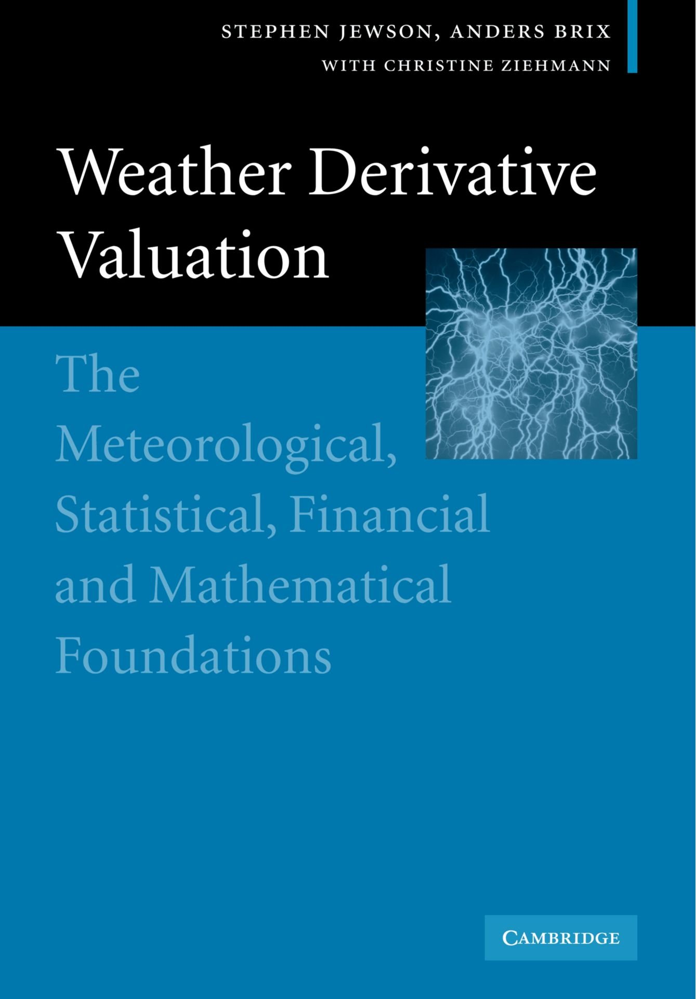

About Me
I’m a research scientist, and spend most of my time doing research and writing journal papers on topics related to weather, climate, climate change, risk and risk modelling. Most of my research is focussed on solving science questions that come up in insurance risk modelling.
I also run Lambda Climate Research Ltd, a company which supplies various outputs from my research to the insurance industry, as a way to motivate and fund my research. Clients get access to data, software tools, presentations, preprints, algorithms, blog posts, discussions and insights. Get in touch if you want to know more.
Prior to focussing on research I spent 22 years working in the insurance industry, in various roles related to the mathematical modelling of weather risks. For 15 years I led the RMS climate risk model development team. Prior to that I worked in climate research and taught mathematics at Oxford University. I have a PhD on coupled climate modelling from the Physics Department of Oxford University, and a degree and masters in maths from Cambridge University.
I use LinkedIn to post updates on my research.
Research Highlights
Some of the more interesting highlights from the research I’ve done over the years are as follows (the numbers refer to papers in the list of publications below):
- Showing that when climate projections for tropical cyclone numbers show decreases, the number of landfalls may well still increase [152].
- Showing that climate projections for changes in tropical cyclone frequency and mean intensity actually give the same information [148,151].
- Showing that when tropical cyclone mean intensity increases, the risk may still go down (and hence that mean intensity is not really a useful metric) [148,151].
- Inventing various new methods for simulating tropical cyclone tracks, tropical cyclone rainfall, and clustering [114, 131, 133] .
- Inventing various simulation methods for use in catastrophe modelling, such as YLT Importance Sampling [139], Stochastic Parameter YLTs [150], Repeat and Delete [150] and Incremental Simulation [154].
- Solving the decision theory problem “should I decide now or wait for the next forecast?”, and demonstrating an algorithm that implements the solution [142]. We also showed that weather forecasts would be more useful if they contained information about possible changes.
- Inventing the non-homogeneous Gaussian regression model, that has become widely used as a way to produce well calibrated probabilistic weather forecasts [22] .
- Inventing the statistical method Directional Component Analysis (DCA), which is similar to PCA, but involves a metric. DCA is useful for finding patterns of extremes in space-time datasets, such as historical climate data-sets and ensemble predictions and projections [140,144,153] .
- Demonstrating that model averaging can make uncertain estimates of recent climate trends [95], and uncertain projections of future climate [143], more accurate, using new methods for model averaging [124,143].
- Deriving expressions for the pricing of weather derivatives for many different underlying distributions [25, 26, 39, 46, 47, 66, 67, 120], and the differential equation that governs the price of weather options on weather swaps in a perfect market (aka the weather derivatives Black-Scholes equation) [27] .
Our Book on Weather Derivatives
Weather Derivative Valuation, by Stephen Jewson and Anders Brix, with Christine Ziehmann.
Follow one of these links to purchase:
Profits from the sales of this book are donated to Centrepoint, a charity for socially excluded young people in London.
Papers
- (158) S. Jewson (2024): Projecting future tropical cyclone frequencies by combining uncertain empirical estimates of baseline frequencies with climate model estimates of change: Journal of Catastrophe Risk and Resilience
- (157) S. Jewson (2023): The Impact of Projected Changes in Hurricane Frequencies on U.S. Hurricane Wind and Surge Damage: Journal of Applied Meteorology and Climatology
- (156) S. Jewson, T. Maynard, F. Dottori (2023): A service to help insurers understand the financial impacts of changing flood risk in Europe, based on PESETA IV Climate Services // data
- (155) S. Jewson (2023): Tropical Cyclones and Climate Change: Global Landfall Frequency Projections Derived from Knutson et al. (2020). Bulletin of the American Meteorological Society
- (154) S. Jewson (2023): A new simulation algorithm for more precise estimates of change in catastrophe risk models, with application to hurricanes and climate change: Stochastic Environmental Research and Risk Assessment // Free to view version
- (153) S. Jewson, G. Messori, G. Barbato, P. Mercogliano, J. Mysiak and M. Sassi (2022): Developing Representative Impact Scenarios From Climate Projection Ensembles, With Application to UKCP18 and EURO-CORDEX Precipitation: Journal of Advances in Modeling Earth Systems
- (152) S. Jewson (2022): Conversion of the Knutson et al. Tropical Cyclone Frequency Projections to North Atlantic Landfall: Journal of Applied Meteorology and Climatology
- (151) S. Jewson (2022): The Interpretation and Implications of the Knutson et al. 2020 Projections of Changes in the Frequency and Intensity of Tropical Cyclones Under Climate Change: Quarterly Journal of the Royal Meteorological Society
- (150) S. Jewson (2022): Application of Uncertain Hurricane Climate Change Projections to Catastrophe Risk Models: Stochastic Environmental Research and Risk Assessment // Free to view version
- (149) S. Jewson, S. Scher and G. Messori (2021): Communicating Properties of Changes in Lagged Weather Forecasts: Weather and Forecasting
- (148) S. Jewson (2021): Interpretation of the Knutson et al. (2020) Hurricane Projections, the Impact on Annual Maximum Wind-Speed, and the Role of Uncertainty: : Stochastic Environmental Research and Risk Assessment // Free to view version
- (147) S. Jewson, F. Comola, B. Parkes (2021): Estimating present-day European seasonal mean rainfall by combining historical data and climate model simulations, for risk assessment: Meteorological Applications
- (146) S. Jewson (2021): Conversion of the Knutson et al. (2020) Tropical Cyclone Climate Change Projections to Risk Model Baselines: Journal of Applied Meteorology and Climatology // online software tool // Knutson et al. data // baseline conversion software source codes
- (145) S. Jewson, T. Dallafior, F. Comola (2021): Dealing with Trend Uncertainty in Empirical Estimates of European Rainfall Climate for Insurance Risk Management: Meteorological Applications
- (144) S. Scher, S. Jewson, G. Messori (2021): Robust worst-case scenarios from ensemble forecasts: Weather and Forecasting
- (143) S. Jewson, B. Giuliana, P. Mercogliano, J. Mysiak, M. Sassi (2021): Improving the Potential Accuracy and Usability of EURO-CORDEX Estimates of Future Rainfall Climate using Mean Squared Error Model Averaging: Nonlinear Processes in Geophysics
- (142) S. Jewson, S. Scher and G. Messori (2021): Decide Now or Wait for the Next Forecast? Testing A Decision Framework Using Real Forecasts and Observations: Monthly Weather Review
- (141) S. Jewson and N. Lewis (2020): Statistical Decomposition of the Recent Increase in the Intensity of Tropical Storms: Oceans
- (140) S. Jewson (2020): An Alternative to PCA for Estimating Dominant Patterns of Climate Variability and Extremes, with Application to U.S. and China Seasonal Rainfall: Atmosphere
- (139) S. Jewson, C. Barnes, S. Cusack and E. Bellone (2019): Adjusting catastrophe model ensembles using importance sampling, with application to damage estimation for varying levels of hurricane activity: Meteorological Applications
- (138) M. Sassi, L. Nicotina, P. Pall, D. Stone, A. Hilberts, M. Wehner, S. Jewson (2019): Impact of climate change on European winter and summer flood losses: Advances in Water Resources
- (137) S. Zanardo, L. Nicotina, A. Hilberts and S. Jewson (2019): Modulation of Economic Losses from European Floods by the North Atlantic Oscillation: Geophysical Research Letters
- (136) G. Messori1, R. Caballero, F. Bouchet, D. Faranda, R. Grotjahn, N. Harnik, S. Jewson, J. Pinto, G. Riviere, T.Woollings, P. Yiou (2018): An interdisciplinary approach to the study of extreme weather events: large-scale atmospheric controls and insights from dynamical systems theory and statistical mechanics: Bulletin of the American Meteorological Society
- (135) N. Shome, M. Rahnama, S. Jewson and P. Wilson(2018): Quantifying Model Uncertainty and Risk: a book chapter in Risk Modeling for Hazards and Disasters Hurricanes and Climate Change
- (134) J. Kaczmarska, S. Jewson and E. Bellone (2017): Quantifying the sources of simulation uncertainty in natural catastrophe models: Stochastic Environmental Research and Risk Assessment
- (133) S. Khare, A. Bonazzi, C. Mitas and S. Jewson (2015): Modelling clustering of natural hazard phenomena and the effect on re/insurance loss perspectives: Natural Hazards and Earth System Science
- (132) S. Jewson (2013): A Simple Method for Eliminating Double Counting in Multi-Model Ensemble Forecasts: academia.edu
- (131) J. Grieser and S. Jewson (2012): The RMS TC-rain model: Meteorologische Zeitschrift
- (130) K. Coughlin, E. Bellone, T. Laepple, S. Jewson and K. Nzerem (2009): A relationship between all Atlantic hurricanes and those that make landfall in the USA: Quarterly Journal of the Royal Meteorological Society
- (129) A. Bonazzi, S. Cusack, C. Mitas and S. Jewson (2012): The spatial structure of European wind storms as characterized by bivariate extreme-value copulas: Natural Hazards and Earth System Science
- (128) S. Khare, A. Bonazzi, N. West, E. Bellone and S. Jewson (2009): On the Prediction of Over-Ocean Hurricane Surface Winds and their Uncertainty: Quarterly Journal of the Royal Meteorological Society
- (127) S. Jewson and E. Hawkins (2010): Uncertain Climate Forecasts from Multi-Model Ensembles: When to Use Them and When to Ignore Them: arxiv
- (126) S. Jewson, D. Rowlands and M. Allen (2009): Objective Climate Model Predictions Using Jeffreys' Prior: the General Multivariate Normal Case: arxiv
- (125) S. Jewson, D. Rowlands and M. Allen (2009): Objective Probabilistic Forecasts of Future Climate Based on Jeffreys' Prior: the Case of Correlated Observables: arxiv
- (124) S. Jewson and E. Hawkins (2009): Improving Uncertain Climate Forecasts Using a New Minimum Mean Square Error Estimator for the Mean of the Normal Distribution: arxiv
- (123) S. Jewson and E. Hawkins (2009): Improving the expected accuracy of forecasts of future climate using a simple bias-variance tradeoff: arxiv
- (122) S. Jewson and E. Hawkins (2009): CMIP3 ensemble spread, model similarity, and climate prediction uncertainty: arxiv
- (121) S. Jewson, D. Rowlands and M. Allen (2009): A new method for making objective probabilistic climate forecasts from numerical climate models based on Jeffreys' Prior: arxiv
- (120) S. Jewson (2008): Closed-form expressions for the pricing of weather derivatives: the expected payoff for t-distributed indices: ssrn
- (119) S. Jewson (2008): Weather derivative pricing and the modelling of trends: objective Bayesian versions of the flat-line, linear trend and damped linear trend models: ssrn
- (118) Laepple, T., S. Jewson and K. Coughlin (2007): Interannual temperature predictions using the IPCC multi-model ensemble mean: Geophysical Research Letters
- (117) Jewson, S., E. Bellone, S. Khare, T. Laepple, M. Lonfat, K. Nzerem, A. O'Shay, J. Penzer, K. Coughlin (2007): 5 Year Prediction of the Number of Hurricanes Which Make US Landfall, a chapter in Hurricanes and Climate Change, editor J. Elsner,
- (116) Hall, T. and Jewson, S. (2007): Comparison of Local and Basin-wide methods for Risk Assessment of Tropical Cyclone Landfall: Journal of Applied Meteorology and Climatology
- (115) Hall, T. and Jewson, S. (2007): SST and North American Tropical Cyclone Landfall: A Statistical Modelling Study: arxiv
- (114) Hall, T. and Jewson, S. (2007): Statistical Modelling of North American Tropical Cyclone Tracks: Tellus
- (113) Nzerem, K., Jewson, S. and Laepple, T. (2007): Predicting landfalling hurricane numbers from sea surface temperature: a theoretical comparison of direct and indirect approaches: arxiv
- (112) Laepple, T., Bellone, E., Jewson, S. and Nzerem, K. (2007): Correlations between hurricane numbers and sea surface temperature: why does the correlation disappear at landfall?: arxiv
- (111) Binter, R., Jewson, S., and Khare, S. (2007): Statistical modelling of the relationship between main development region sea surface temperature and landfalling Atlantic basin hurricane numbers: arxiv
- (110) Binter, R., Jewson, S., and Khare, S. (2007): Predicting basin and landfalling hurricane numbers from sea surface temperature: arxiv
- (109) Jewson, S. (2007): Predicting hurricane numbers from sea surface temperature: closed-form expressions for the mean, variance and standard error of the number of hurricanes: arxiv
- (108) Laepple, T., Jewson, S., Penzer, J., Bellone, E. and Nzerem, K. (2007): Predicting landfalling hurricane numbers from basin hurricane numbers: statistical analysis and predictions: arxiv
- (107) Laepple, T. and Jewson, S. (2007): Five year ahead prediction of sea surface temperature in the tropical Atlantic: a comparison between IPCC climate models and simple statistical methods: arxiv
- (106) Laepple, T., Jewson, S., Meagher, J., O'Shay, A. and Penzer, J. (2007): Five year prediction of sea surface temperature in the tropical Atlantic: a comparison of simple statistical methods: arxiv
- (105) Nzerem, K., Jewson, S. and Laepple, T. (2006): Change-point detection in the historical hurricane number time-series: why can't we detect change-points at US landfall? : arxiv
- (104) Jewson, S. and Penzer, J. (2006): Weather derivative pricing and the normal distribution: comparing three fitting schemes using the out-of-sample log-likelihood scoring system: ssrn
- (103) Hall, T. and Jewson, S. (2006): Predicting hurricane regional landfall rates: comparing local and basin-wide track model approaches: arxiv
- (102) Jewson, S. and Penzer, J. (2006): An objective change-point analysis of landfalling historical Atlantic hurricane numbers: arxiv
- (101) Jewson, S. and Penzer, J. (2006): An objective change-point analysis of historical Atlantic hurricane numbers: arxiv
- (100) Binter, R., Jewson, S., Khare, S., O'Shay, A. and Penzer, J: (2006): Year ahead prediction of US landfalling hurricane numbers: the optimal combination of multiple levels of activity since 1900: arxiv
- (99) Hall, T. and Jewson, S. (2006): Comparing classical and Bayesian methods for predicting hurricane landfall rates: arxiv
- (98) Jewson, S. and Penzer, J. (2006): Weather derivative pricing and the normal distribution: fitting the variance to maximise expected predictive log-likelihood: ssrn
- (97) Jewson, S., Penzer, J. and Casey, C. (2006): Year ahead prediction of US landfalling hurricane numbers: the optimal combination of long and short baselines for intense hurricanes: arxiv
- (96) Meagher, J. and Jewson, S. (2006): Year-ahead prediction of hurricane season sea surface temperature in the tropical Atlantic: arxiv
- (95) Jewson, S. and Penzer, J. (2006): Estimating trends in weather series: consequences for pricing derivatives: Studies in Non-linear Dynamics and Econometrics
- (94) Jewson, S., Casey, C. and Penzer, J. (2005): Year ahead prediction of US landfalling hurricane numbers: the optimal combination of long and short baselines: arxiv
- (93) Jewson, S. (2006): TheModelling of Weather Derivative Portfolio Risk: a chapter in 'Risk and Portfolio Management', a book published by Springer Verlag
- (92) Khare, S. and Jewson, S. (2005): Year ahead prediction of US landfalling hurricane numbers: intense hurricanes: arxiv
- (91) Hall, T, and Jewson, S. (2005): Statistical modelling of tropical cyclone tracks: non-normal innovations: arxiv
- (90) Hall, T, and Jewson, S. (2005): Statistical modelling of tropical cyclone tracks: modelling cyclone lysis: arxiv
- (89) Hall, T, and Jewson, S. (2005): Statistical modelling of tropical cyclone genesis: a non-parametric model for the annual distribution: arxiv
- (88) Hall, T, and Jewson, S. (2005): Statistical modelling of tropical cyclone tracks: modelling the autocorrelation in track shape: arxiv
- (87) Jewson, S. Pricing the Weather: Energy Risk, August 2005
- (86) Jewson, S., and Jones, S. (2005): Weather derivatives and carbon emissions trading: a chapter in The Finance of Climate Change, a book published by RiskBooks
- (85) Khare, S. and Jewson, S. (2005): Year ahead prediction of US landfalling hurricane numbers: arxiv
- (84) Jewson, S. (2005): Improving on the empirical covariance matrix using truncated PCA with white noise residuals: arxiv
- (83) Jewson, S. and Whitehead, D. Taking the measure of data: Environmental Finance April 2004
- (82) Hall, T, and Jewson, S. (2005): Statistical modelling of tropical cyclone tracks: a comparison of models for the variance of trajectories: arxiv
- (81) Jewson, S. and Khare, S. (2005): Weather derivative pricing and the impact of El Nino on US temperature: empirical tests of an optimal categorical forecasting scheme: ssrn
- (80) Hall, T, and Jewson, S. (2005): Statistical modelling of tropical cyclone tracks: a semi-parametric model for the mean trajectory: arxiv
- (79) Jewson, S. and Penzer, J. (2005): Weather derivative pricing and the impact of El Nino on US temperature: the statistics of optimal categorical predictions: ssrn
- (78) Jewson, S. and Penzer, J. (2005): Weather derivative pricing and the detrending of meteorological data: three alternative representations of damped linear detrending: ssrn
- (77) Jewson, S. and Penzer, J. (2004): Weather derivative pricing and the detrending of meteorological data: a comparison of predictions based on local and global trend estimates: ssrn
- (76) Jewson, S. and Penzer, J. (2004): Weather derivative pricing and the detrending of meteorological data: an empirical evaluation of damped linear detrending: ssrn
- (75) Jewson, S. and Penzer, J. (2004): Weather derivative pricing and the detrending of meteorological data: closed-form solutions for the behaviour of a simple decision rule: ssrn
- (74) Jewson, S. and Penzer, J. (2004): Weather derivative pricing and a preliminary investigation into a decision rule for detrending: ssrn
- (73) Jewson, S. (2004): Probabilistic forecasting of temperature: a comparison of four spread regression models: arxiv
- (72) Jewson, S. (2004): Probabilistic forecasting of temperature: measuring the utility of the ensemble spread: arxiv
- (71) Jewson, S. (2004): Probabilistic forecasting of temperature: comments on the Bayesian model averaging approach: arxiv
- (70) Jewson, S. (2004): Making use of the information in ensemble weather forecasts: comparing the end to end and full statistical modelling approaches: arxiv
- (69) Jewson, S. (2004): Probabilistic temperature forecasting: a summary of our recent research results: arxiv
- (68) Jewson, S. (2004): Arbitrage pricing of weather derivatives and the stochastic process for the expectation of non-linear weather indices: ssrn
- (67) Jewson, S. (2004): Closed-form expressions for the pricing of weather derivatives: the payoff variance for gamma distributed indices: ssrn
- (66) Jewson, S. (2004): Closed-form expressions for the pricing of weather derivatives: the expected payoff for gamma distributed indices: ssrn
- (65) Jewson, S. and Penzer, J. (2004): Following the trend, a review of our recent work on detrending Risk Magazine
- (64) Jewson, S. (2004): The inaccessibility of meteorological journals to the private sector: Weather
- (63) Jewson, S. and Penzer, J. (2004): Weather derivative pricing and the interpretation of linear trend models: ssrn
- (62) Jewson, S. and Penzer, J. (2004): Optimal year ahead forecasting of temperature in the presence of a linear trend, and the pricing of weather derivatives: ssrn
- (61) Jewson, S. and Penzer, J. (2004):Closed form expressions for the uncertainty from linear detrending, and the pricing of weather derivatives: ssrn
- (60) Jewson, S. (2004): Weather derivatives and weather derivative pricing: FSR Forum
- (59) Jewson, S. (2004): Introduction to weather derivative pricing: ssrn
- (58) Jewson, S. and Brix. A. (2004): Weather derivative pricing and the spatial variability of US temperature trends: ssrn
- (57) Jewson, S. (2004): Weather derivative pricing and the normality of standard US temperature indices: ssrn
- (56) Jewson, S. (2004): Weather derivative pricing and the year ahead forecasting of temperature part 2: theory: ssrn
- (55) Jewson, S. and Brix, A. (2004): Weather derivative pricing and the year ahead forecasting of temperature part 1: empirical results: ssrn
- (54) Jewson, S. (2004): Weather derivative pricing and the potential accuracy of daily temperature modelling: ssrn
- (53) Jewson, S. (2004): Convergence of the distribution of payoffs for portfolios of weather derivative options: ssrn
- (52) Jewson, S. (2004): A preliminary assessment of the utility of seasonal forecasts for the pricing of U.S. temperature based weather derivatives: ssrn
- (51) Jewson, S. (2004): The relative importance of trends, distributions and the number of years of data in the pricing of weather options: ssrn
- (50) Jewson, S., Ambaum, M. and Ziehmann, C. (2004): Singular vector ensemble forecasting systems and the prediction of flow dependent uncertainty: arxiv
- (49) Jewson, S. (2004): Improving probabilistic weather forecasts using seasonally varying calibration parameters: arxiv
- (48) Jewson, S. (2004): The application of PCA to weather derivative portfolios: ssrn
- (47) Jewson, S. (2004): Closed-form expressions for the beta of a weather derivative portfolio: ssrn
- (46) Jewson, S. (2004): Closed-form expressions for the pricing of weather derivatives Part 4: the kernel density: ssrn
- (45) Jewson, S. (2004): Comparing the potential accuracy of burn and index modelling for weather option valuation: ssrn
- (44) Jewson, S. (2004): Four methods for the static hedging of weather derivative portfolios: ssrn
- (43) Jewson, S. (2004): The problem with the Brier score: arxiv
- (42) Jewson, S. (2003): Weather forecasts, weather derivatives, Black-Scholes, Feynmann-Kac and Fokker-Planck: arxiv
- (41) Jewson, S. (2003): Use of the basic and adjusted kernel densities for weather derivative pricing: ssrn
- (40) Jewson, S. (2003): Risk loading and implied volatility in the pricing of weather options: ssrn
- (39) Jewson. S. (2003): Closed form expressions for the pricing of weather derivatives part 3: the payoff variance: ssrn
- (38) Jewson, S. (2003): Horizon value at risk for weather derivatives part 2: portfolios: ssrn
- (37) Jewson, S. (2003): Horizon value at risk for weather derivatives part 1: single contracts: ssrn
- (36) Jewson, S. (2003): Simple models for the volatility of weather derivative underlyings: ssrn
- (35) Jewson, S., Hamlin J. and Whitehead D. (2003): Moving Stations and Making Money: Environmental Finance Nov 2003
- (34) Jewson, S. (2003): Do medium range ensemble forecasts give useful predictions of temporal correlations? : arxiv
- (33) Jewson, S. (2003): Do probabilistic medium-range temperature forecasts need to allow for non-normality? : arxiv
- (32) Jewson, S. (2003): Comparing the ensemble mean and the ensemble standard deviation as inputs for probabilistic medium-range temperature forecasts: arxiv
- (31) Jewson, S. and Ziehmann, C. (2003): Five guidelines for the evaluation of site-specific medium range probabilistic temperature forecasts: arxiv
- (30) Jewson, S., Brix, A. and Ziehmann, C. (2003): A note on the use of the word "likelihood" in statistics and meteorology: arxiv
- (29) Jewson, S. (2003): Moment based ensemble calibration methods: arxiv
- (28) Jewson, S. (2003): Estimation of uncertainty in the pricing of weather options: ssrn
- (27) Jewson, S. and Zervos, M. (2003): The Black-Scholes equation for weather derivatives: ssrn
- (26) Jewson, S. (2003): Closed form expressions for the pricing of weather derivatives: Part 2 - the greeks: ssrn
- (25) Jewson, S. (2003): Closed form expressions for the pricing of weather derivatives: Part 1 - the expected payoff: ssrn
- (24) Jewson, S. (2003): Use of the likelihood for measuring the skill of probabilistic forecasts: arxiv
- (23) Jewson, S., Doblas-Reyes, F. and Hagedorn, R. (2003): The assessment and calibration of ensemble seasonal forecasts of equatorial pacific ocean temperature and the predictability of uncertainty: arxiv
- (22) Jewson, S., Brix, A. and Ziehmann, C. (2003): A new parametric model for the assessment and calibration of medium range ensemble temperature forecasts: Atmospheric Science Letters
- (21) Jewson, S. and Ziehmann, C. (2002): Using ensembles forecasts to predict forecast changes, with application to weather swap value at risk: Atmospheric Science Letters
- (20) Jewson, S. and Ziehmann, C. (2002): Weather swap pricing and the optimal size for medium range forecast ensembles: Weather and Forecasting
- (19) Jewson, S. (2002): Weather derivative pricing and risk management: volatility and value at risk: ssrn
- (18) Jewson, S. and Caballero, R. (2002): The use of weather forecasts in the pricing of weather derivatives: Meteorological Applications
- (17) Jewson, S. and Caballero, R. (2002): Seasonality in the statistics of surface air temperature and the pricing of weather derivatives: Meteorological Applications
- (16) Caballero, R. and Jewson, S. (2002): Multivariate long memory modelling of daily surface air temperatures and the valuation of weather derivative portfolios: ssrn
- (15) Jewson, S., Brix, A. and Ziehmann, C. (2002): Use of meteorological forecasts in weather derivative pricing: a chapter in 'Climate Risk and the Weather Market', published by RiskBooks
- (14) Jewson, S. (2002): Arbitrage Pricing for Weather Options: a chapter in 'Climate Risk and the Weather Market', published by Riskbooks [09.zip]
- (13) Brix, A., Jewson, S. and Ziehmann, C. (2002): Weather Derivative Modelling and Valuation: a chapter in 'Climate Risk and the Weather Market', published by RiskBooks
- (12) Caballero, R., Jewson, S. and Brix, A. (2002): Long memory in surface air temperature: Detection, modelling and application to weather derivative valuation: Climate Research
- (11) Jewson, S. (2002): Weather Option Pricing With Transaction Costs: Energy Power and Risk Management 2003
- (10) Jewson, S., Brix A. and Ziehmann, C (2002): Risk Modelling: Weather Risk Report - Global Reinsurance Review -Feb 2002
- (9) Jewson, S. (2001): Use of GCM Forecasts in Financial-Meteorological Models: Proceedings of the Climate Diagnostics Workshop #25 - US Dept of Commerce
- (8) Jewson, S. and Whitehead, D. (2001): Weather Risk and Weather Data: Environmental Finance Feb 2001
- (7) Jewson, S. and Brix, A. (2001): Sunny Outlook for Weather Investors? : Environmental Finance Nov 2001
- (6) Elliott, J., Jewson S. and Sutton R. (2001): The Impact of the 1997/1998 El Nino event on the Atlantic Ocean: Journal of Climate
- (5) Sutton R., Norton W. and Jewson S. (2001): The North Atlantic Oscillation - What Role for the Ocean?: Atmospheric Science Letters
- (4) Kleeman R., Wang G., and Jewson S. (2001): Surface flux response to interannual tropical Pacific Sea Surface Temperature variability in AMIP models: Climate Dynamics / local copy
- (3) Jewson, S. (2000): Use of Meteorological Forecasts at RMS: ECMWF conference reports
- (2) Dong, B., Sutton R., Jewson S., O'Neill A. and Slingo J. (2000): Predictable winter climate in the North Atlantic sector during the 1997-1999 ENSO cycle: Geophysical Research Letters
- (1) Sutton, R., Jewson S. S. and Rowell D. (2000): The Elements of Climate Variability in the Tropical Atlantic Region: Journal of Climate
Contact Me
firstname.surname@gmail.com